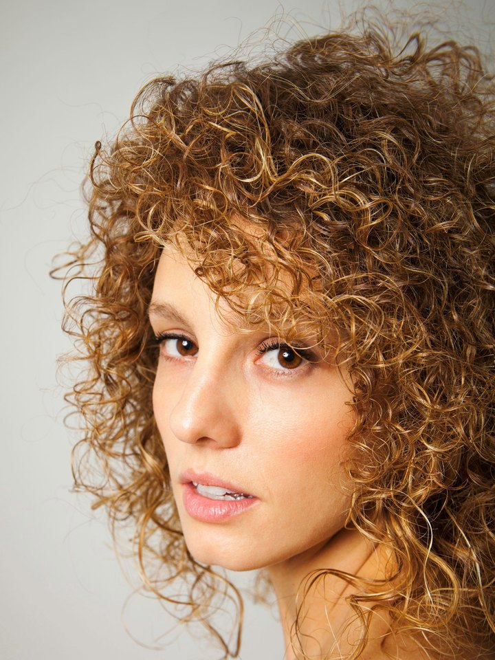
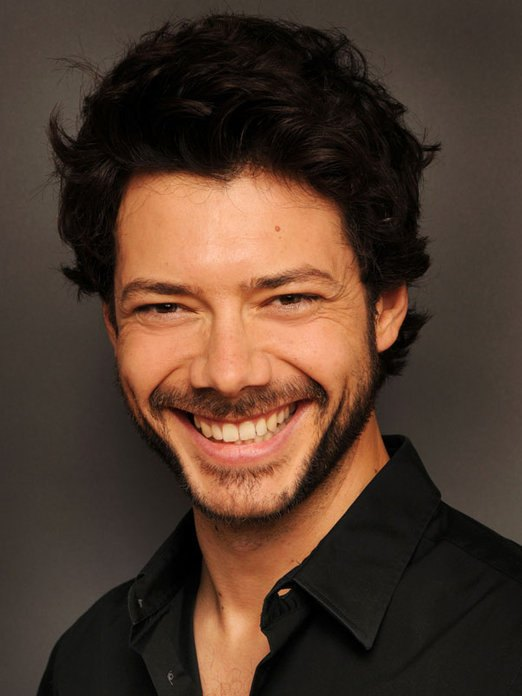

Una dintre ele știeUna di loro saUna de ellas lo sabe
For three years, someone kept quiet.Trei ani cineva a tăcut.Per tre anni, qualcuno ha taciuto.Durante tres años, alguien guardó silencio.
Co-produced by Mădălina Ghenea · Original story by Olivia OdaianuCoproducție Mădălina Ghenea · Poveste originală de Olivia OdaianuCoprodotto da Mădălina Ghenea · Soggetto originale di Olivia OdaianuCoproducida por Mădălina Ghenea · Historia original de Olivia Odaianu

A contained thriller. An international cast.Un thriller cu spațiu închis. O distribuție internațională.Un thriller a porte chiuse. Un cast internazionale.Un thriller de espacio cerrado. Un reparto internacional.
ConfirmedConfirmatăConfermataConfirmada
Terms on requestTermeni la cerereCondizioni su richiestaCondiciones a petición

Four friends. Only one is guilty.Patru prietene. O singură vinovată.Quattro amiche. Una sola colpevole.Cuatro amigas. Solo una es culpable.
A bachelorette weekend in a remote cabin in the Romanian Carpathians. An anonymous text: one of them knows what happened three years ago. By tomorrow, they all pay.Un weekend de burlăcițe într-o cabană izolată din Carpații românești. Un mesaj anonim: una dintre ele știe ce s-a întâmplat acum trei ani. Până mâine, toate plătesc.Un addio al nubilato in una baita isolata sui Carpazi romeni. Un messaggio anonimo: una di loro sa cosa è successo tre anni fa. Entro domani, pagheranno tutte.Una despedida de soltera en una cabaña aislada de los Cárpatos rumanos. Un mensaje anónimo: una de ellas sabe lo que pasó hace tres años. Mañana, todas pagan.

The weekendWeekendulIl weekendEl fin de semana
Ioana, a high-school teacher in her forties, is finally getting married. To celebrate, she takes her three closest friends to an isolated cabin in the Făgăraș Mountains: Sonia, an ER doctor who no longer drinks; Ingrid, an army officer who never travels without her gun; and Vera, an interior designer raising her son alone.Ioana, profesoară de liceu trecută de 40 de ani, se mărită în sfârșit. Ca să sărbătorească, își ia cele trei prietene apropiate într-o cabană izolată din munții Făgăraș: Sonia, medic de urgență care nu mai bea; Ingrid, ofițer în armată care nu pleacă nicăieri fără pistol; și Vera, designer de interior care își crește singură băiatul.Ioana, insegnante di liceo sulla quarantina, finalmente si sposa. Per festeggiare porta le sue tre amiche più care in una baita isolata sui monti Făgăraș: Sonia, medico del pronto soccorso che non beve più; Ingrid, ufficiale dell'esercito che non viaggia mai senza la pistola; e Vera, interior designer che cresce il figlio da sola.Ioana, profesora de instituto de cuarenta y tantos años, por fin se casa. Para celebrarlo, lleva a sus tres mejores amigas a una cabaña aislada en los montes Făgăraș: Sonia, médica de urgencias que ya no bebe; Ingrid, oficial del ejército que nunca viaja sin su pistola; y Vera, interiorista que cría sola a su hijo.
They have known each other for only a year, yet it feels like a lifetime.Se cunosc de doar un an, dar parcă se știu de-o viață.Si conoscono da appena un anno, eppure sembra una vita.Solo se conocen desde hace un año, pero parece toda una vida.

The messageMesajulIl messaggioEl mensaje
That night, all four phones light up at once with the same anonymous text. None of them knows who Liviu Dima is. By morning the phones are gone, the car has vanished, and a white poster is taped to the cabin wall: his name, and a promise that he will finally be heard.În noaptea aceea, toate cele patru telefoane se aprind deodată cu același mesaj anonim. Niciuna nu știe cine e Liviu Dima. Dimineața, telefoanele au dispărut, mașina nu mai e, iar pe peretele cabanei e lipit un afiș alb: numele lui și promisiunea că, în sfârșit, va fi auzit.Quella notte i quattro telefoni si illuminano insieme con lo stesso messaggio anonimo. Nessuna sa chi sia Liviu Dima. Al mattino i telefoni sono spariti, l'auto non c'è più e sul muro della baita è attaccato un manifesto bianco: il suo nome, e la promessa che finalmente verrà ascoltato.Esa noche, los cuatro teléfonos se iluminan a la vez con el mismo mensaje anónimo. Ninguna sabe quién es Liviu Dima. Por la mañana, los teléfonos han desaparecido, el coche ya no está y en la pared de la cabaña hay un cartel blanco pegado: su nombre y la promesa de que por fin será escuchado.
Then Vera has a severe asthma attack. Her inhaler is in the missing car.Apoi Vera face o criză severă de astm. Inhalatorul ei e în mașina dispărută.Poi Vera ha una grave crisi d'asma. Il suo inalatore è nell'auto scomparsa.Entonces Vera sufre un fuerte ataque de asma. Su inhalador está en el coche desaparecido.

The woodsPădureaIl boscoEl bosque
With no phones and no car, the survivors set out on foot through the forest, twelve kilometres from the nearest village. Every step strips away another secret. Every confession turns friends into suspects.Fără telefoane și fără mașină, supraviețuitoarele pornesc pe jos prin pădure, la doisprezece kilometri de cel mai apropiat sat. Fiecare pas mai dă jos un secret. Fiecare mărturisire transformă prietenele în suspecte.Senza telefoni né auto, le sopravvissute si incamminano nel bosco, a dodici chilometri dal villaggio più vicino. Ogni passo fa cadere un segreto. Ogni confessione trasforma le amiche in sospettate.Sin teléfonos y sin coche, las supervivientes cruzan el bosque a pie, a doce kilómetros del pueblo más cercano. Cada paso arranca otro secreto. Cada confesión convierte a las amigas en sospechosas.
By nightfall, the question is no longer who sent the message, but which of them will make it out of the woods.Până la căderea serii, întrebarea nu mai e cine a trimis mesajul, ci care dintre ele va ieși din pădure.Al calar della sera la domanda non è più chi ha mandato il messaggio, ma chi di loro uscirà dal bosco.Al caer la noche, la pregunta ya no es quién envió el mensaje, sino cuál de ellas saldrá del bosque.

Ioana planned everything.Ioana a plănuit totul.Ioana ha pianificato tutto.Ioana lo planeó todo.
Liviu Dima was her son. Three years ago, drunk and heartbroken after Ingrid humiliated him at a party, he fell into an unfenced pit on Vera's land. Sonia, drinking on her ER shift, missed his internal bleeding. Ioana chose each woman, built the friendship and staged the weekend to hear them confess. She wanted the truth, not their deaths.Liviu Dima era fiul ei. Acum trei ani, beat și cu inima frântă după ce Ingrid l-a umilit la o petrecere, a căzut într-o groapă neîngrădită de pe terenul Verei. Sonia, care bea în gardă la Urgențe, nu i-a văzut hemoragia internă. Ioana le-a ales pe fiecare, a construit prietenia și a pus la cale weekendul ca să le audă mărturisind. Voia adevărul, nu moartea lor.Liviu Dima era suo figlio. Tre anni fa, ubriaco e con il cuore spezzato dopo che Ingrid lo aveva umiliato a una festa, è caduto in una fossa non recintata sul terreno di Vera. Sonia, che beveva durante il turno al pronto soccorso, non si è accorta della sua emorragia interna. Ioana ha scelto ognuna di loro, ha costruito l'amicizia e ha organizzato il weekend per sentirle confessare. Voleva la verità, non la loro morte.Liviu Dima era su hijo. Hace tres años, borracho y con el corazón roto después de que Ingrid lo humillara en una fiesta, cayó en un pozo sin vallar en el terreno de Vera. Sonia, que bebía durante su guardia en urgencias, no detectó su hemorragia interna. Ioana eligió a cada una, construyó la amistad y montó el fin de semana para oírlas confesar. Quería la verdad, no su muerte.
The weekend spirals. Vera dies without her inhaler. Sonia is stabbed in a struggle. Ingrid shoots Tudor, Ioana's fiancé, then falls to her death. The case is closed as a chain of accidents.Weekendul scapă de sub control. Vera moare fără inhalator. Sonia e înjunghiată într-o încăierare. Ingrid îl împușcă pe Tudor, logodnicul Ioanei, apoi cade în râpă. Cazul se închide ca un șir de accidente.Il weekend precipita. Vera muore senza inalatore. Sonia viene accoltellata in una colluttazione. Ingrid spara a Tudor, il fidanzato di Ioana, poi precipita in un burrone. Il caso viene archiviato come una serie di incidenti.El fin de semana se desmorona. Vera muere sin su inhalador. Sonia es apuñalada en un forcejeo. Ingrid dispara a Tudor, el prometido de Ioana, y luego cae al vacío. El caso se cierra como una cadena de accidentes.
One year later, Ioana adopts Vera's son, Darius.Un an mai târziu, Ioana îl adoptă pe Darius, fiul Verei.Un anno dopo, Ioana adotta Darius, il figlio di Vera.Un año después, Ioana adopta a Darius, el hijo de Vera.

An Agatha Christie puzzle, played at the speed of grief.Un puzzle Agatha Christie, jucat în ritmul doliului.Un enigma alla Agatha Christie, al ritmo del lutto.Un enigma a lo Agatha Christie, jugado al ritmo del duelo.
A closed circle, a ticking clock and a culprit nobody can name. But here every death is an accident, and that is the horror. Nobody in this story is a monster. Everyone is guilty of looking away.Un cerc închis, un ceas care ticăie și un vinovat pe care nu-l poate numi nimeni. Dar aici fiecare moarte e un accident, și asta e oroarea. În povestea asta nu există monștri. Toate sunt vinovate că au întors privirea.Un cerchio chiuso, un conto alla rovescia e un colpevole senza nome. Ma qui ogni morte è un incidente, ed è questo l'orrore. In questa storia non ci sono mostri. Tutte sono colpevoli di aver distolto lo sguardo.Un círculo cerrado, un reloj en marcha y un culpable que nadie sabe nombrar. Pero aquí cada muerte es un accidente, y ese es el horror. En esta historia nadie es un monstruo. Todas son culpables de haber mirado hacia otro lado.
Warm inside. Nothing but woods outside.Cald înăuntru. Afară, doar pădure.Caldo dentro. Fuori, solo il bosco.Calor dentro. Fuera, solo bosque.


Cold outside. Warm only in the window.Rece afară. Cald doar în geam.Freddo fuori. Caldo solo alla finestra.Frío fuera. Calor solo en la ventana.
Night exteriors in desaturated teal-black; the cabin's amber windows are the only warmth in frame. Long lenses from the treeline make the audience the watcher. Inside, the camera goes handheld and close as the friendship cracks.Exterioare de noapte în negru-verzui desaturat; geamurile chihlimbar ale cabanei sunt singura căldură din cadru. Obiective lungi, de la marginea pădurii, fac din spectator cel care pândește. Înăuntru, camera trece din mână, aproape, pe măsură ce prietenia crapă.Esterni notturni in un nero-verde desaturato; le finestre ambrate della baita sono l'unico calore nell'inquadratura. Lunghe focali dal limite del bosco fanno dello spettatore l'osservatore. Dentro, macchina a mano e primi piani mentre l'amicizia si incrina.Exteriores nocturnos en un negro verdoso desaturado; las ventanas ámbar de la cabaña son el único calor del encuadre. Teleobjetivos desde el linde del bosque convierten al espectador en el que acecha. Dentro, cámara en mano y cerca, a medida que la amistad se resquebraja.

The Făgăraș MountainsMunții FăgărașI monti FăgărașLos montes Făgăraș
Romania's highest range. One road in, no signal, twelve kilometres of forest to the nearest village. Shot in Romania and Italy as a European co-production, around one main location: the cabin.Cel mai înalt lanț muntos din România. Un singur drum, fără semnal, doisprezece kilometri de pădure până la cel mai apropiat sat. Filmat în România și Italia, ca o coproducție europeană, în jurul unei singure locații principale: cabana.La catena più alta della Romania. Una sola strada, niente segnale, dodici chilometri di bosco fino al villaggio più vicino. Girato in Romania e in Italia come coproduzione europea, attorno a una sola location principale: la baita.La cordillera más alta de Rumanía. Una sola carretera, sin cobertura, doce kilómetros de bosque hasta el pueblo más cercano. Rodada en Rumanía e Italia como coproducción europea, en torno a una localización principal: la cabaña.

One song, played twice.Un cântec, cântat de două ori.Una canzone, suonata due volte.Una canción, sonando dos veces.
“Summer Wine” plays on the first night, when they still laugh. It returns at the end, when there is no one left to laugh. In between: wind, pine and silence.„Summer Wine” se aude în prima seară, când încă râd. Revine la final, când nu mai e nimeni care să râdă. Între ele: vânt, brazi și liniște.“Summer Wine” risuona la prima sera, quando ridono ancora. Ritorna alla fine, quando non resta più nessuno a ridere. In mezzo: vento, pini e silenzio.«Summer Wine» suena la primera noche, cuando aún ríen. Vuelve al final, cuando ya no queda nadie para reír. En medio: viento, pinos y silencio.
Music rights to be cleared.Drepturile muzicale urmează să fie obținute.Diritti musicali da acquisire.Derechos musicales pendientes.

In the company ofÎn companiaIn compagnia diEn la compañía de
Women, isolation, and the friendship that breaks first.Femei, izolare și prietenia care cedează prima.Donne, isolamento e l'amicizia che si spezza per prima.Mujeres, aislamiento y la amistad que se rompe primero.
A weekend among friends turns into a game of accusations.Un weekend între prieteni devine un joc al acuzațiilor.Un weekend tra amici diventa un gioco di accuse.Un fin de semana entre amigos se convierte en un juego de acusaciones.
A dinner party where the real threat is the past.O cină la care adevărata amenințare e trecutul.Una cena in cui la vera minaccia è il passato.Una cena en la que la verdadera amenaza es el pasado.
Sources: Box Office Mojo, The Numbers. A wide range: the outcome depends on festival launch and sales strategy.Surse: Box Office Mojo, The Numbers. Plaja e largă: rezultatul depinde de lansarea la festival și de strategia de vânzări.Fonti: Box Office Mojo, The Numbers. Un ventaglio ampio: il risultato dipende dal lancio ai festival e dalla strategia di vendita.Fuentes: Box Office Mojo, The Numbers. Un abanico amplio: el resultado depende del lanzamiento en festivales y de la estrategia de ventas.

Four women. Four secrets.Patru femei. Patru secrete.Quattro donne. Quattro segreti.Cuatro mujeres. Cuatro secretos.
Explore the room.Explorează camera.Esplora la stanza.Explora la habitación.
Ioana
The teacher. The bride. Over forty, finally happy, and the only one who never says what she was doing three years ago.Profesoara. Mireasa. Trecută de 40 de ani, fericită în sfârșit, și singura care nu spune niciodată ce făcea acum trei ani.L'insegnante. La sposa. Più di quarant'anni, finalmente felice, e l'unica che non dice mai cosa faceva tre anni fa.La profesora. La novia. Pasados los cuarenta, por fin feliz, y la única que nunca dice qué hacía hace tres años.
 Played byÎn rolInterpretata daInterpretada porMarta EturaWishlist
Played byÎn rolInterpretata daInterpretada porMarta EturaWishlistSonia
The doctor. Sober, precise, calm in a crisis. Too calm, the others start to think.Medicul. Trează, precisă, calmă în criză. Prea calmă, încep să creadă celelalte.La dottoressa. Sobria, precisa, calma nelle emergenze. Troppo calma, cominciano a pensare le altre.La médica. Sobria, precisa, serena en una crisis. Demasiado serena, empiezan a pensar las demás.

Played byÎn rolInterpretata daInterpretada porEsther AceboConfirmedConfirmatăConfermataConfirmadaIngrid
The soldier. Ironic, hard, armed. She sees a hooded figure in the trees and tells no one.Militarul. Ironică, dură, înarmată. Vede o siluetă cu glugă printre copaci și nu spune nimănui.La soldatessa. Ironica, dura, armata. Vede una figura incappucciata tra gli alberi e non lo dice a nessuno.La militar. Irónica, dura, armada. Ve una figura encapuchada entre los árboles y no se lo dice a nadie.
 Played byÎn rolInterpretata daInterpretada porMădălina GheneaConfirmedConfirmatăConfermataConfirmada
Played byÎn rolInterpretata daInterpretada porMădălina GheneaConfirmedConfirmatăConfermataConfirmadaVera
The mother. Raising Darius alone, forgetting everything except him. She is the first to fall.Mama. Îl crește singură pe Darius și uită orice, în afară de el. E prima care cade.La madre. Cresce Darius da sola e dimentica tutto tranne lui. È la prima a cadere.La madre. Cría sola a Darius y lo olvida todo menos a él. Es la primera en caer.
 Played byÎn rolInterpretata daInterpretada porAnna-Maria SiekluckaWishlist
Played byÎn rolInterpretata daInterpretada porAnna-Maria SiekluckaWishlistTudor
The fiancé. A lawyer, two hours away, who keeps calling.Logodnicul. Avocat, la două ore distanță, care tot sună.Il fidanzato. Avvocato, a due ore di distanza, continua a chiamare.El prometido. Abogado, a dos horas de allí, que no deja de llamar.

Played byÎn rolInterpretata daInterpretada porÁlvaro MorteWishlistWho plays whomCine pe cine joacăChi interpreta chiQuién es quién

Why this storyDe ce povestea astaPerché questa storiaPor qué esta historia
We all keep one story we never tell. One of Them Knows asks what happens when silence has a body count.Fiecare dintre noi păstrează o poveste pe care n-o spune niciodată. Una dintre ele știe întreabă ce se întâmplă când tăcerea face victime.Tutti custodiamo una storia che non raccontiamo mai. Una di loro sa si chiede cosa succede quando il silenzio fa delle vittime.Todos guardamos una historia que nunca contamos. Una de ellas lo sabe se pregunta qué ocurre cuando el silencio deja muertos.
It is a thriller about guilt rather than evil: four women who each looked away once, and a mother who could not. We want audiences to leave the cinema arguing about who was to blame, and quietly asking themselves what they have never said.E un thriller despre vinovăție, nu despre rău: patru femei care au întors privirea o dată și o mamă care n-a putut. Vrem ca publicul să iasă din sală certându-se cine e de vină și întrebându-se, în gând, ce n-a spus niciodată.È un thriller sulla colpa, non sul male: quattro donne che una volta hanno distolto lo sguardo, e una madre che non ci è riuscita. Vogliamo che il pubblico esca dalla sala discutendo di chi sia la colpa, e chiedendosi in silenzio cosa non ha mai detto.Es un thriller sobre la culpa más que sobre el mal: cuatro mujeres que una vez miraron hacia otro lado, y una madre que no pudo hacerlo. Queremos que el público salga del cine discutiendo quién tuvo la culpa, y preguntándose en voz baja qué es lo que nunca ha dicho.
Who makes itCine îl faceChi lo realizzaQuién la hace
KSM Production
Cluj-Napoca. Two features released in 2026: The Handler, a thriller shot in Romania and Spain with Esther Acebo and Costas Mandylor, and Dosarele Orașului Alb, a mystery released in cinemas.Cluj-Napoca. Două lungmetraje lansate în 2026: The Handler, thriller filmat în România și Spania, cu Esther Acebo și Costas Mandylor, și Dosarele Orașului Alb, mystery lansat în cinematografe.Cluj-Napoca. Due lungometraggi usciti nel 2026: The Handler, thriller girato in Romania e Spagna con Esther Acebo e Costas Mandylor, e Dosarele Orașului Alb, mystery uscito in sala.Cluj-Napoca. Dos largometrajes estrenados en 2026: The Handler, un thriller rodado en Rumanía y España con Esther Acebo y Costas Mandylor, y Dosarele Orașului Alb, un misterio estrenado en cines.
ksmproduction.ro ↗Mădălina Ghenea
Actress and producer. Youth (Paolo Sorrentino), House of Gucci (Ridley Scott).Actriță și producătoare. Youth (Paolo Sorrentino), House of Gucci (Ridley Scott).Attrice e produttrice. Youth (Paolo Sorrentino), House of Gucci (Ridley Scott).Actriz y productora. Youth (Paolo Sorrentino), La casa Gucci (Ridley Scott).
IMDb ↗
Olivia Odaianu
Author of the original screenplay and of the novel Acel martie.Autoarea scenariului original și a romanului Acel martie.Autrice della sceneggiatura originale e del romanzo Acel martie.Autora del guion original y de la novela Acel martie.
IMDb ↗
Oriol Paulo
The Invisible Guest, The Body, Mirage; The Innocent (Netflix). His films have been remade in India and Italy.The Invisible Guest, The Body, Mirage; The Innocent (Netflix). Filmele lui au fost refăcute în India și Italia.The Invisible Guest, The Body, Mirage; The Innocent (Netflix). I suoi film sono stati rifatti in India e in Italia (Il testimone invisibile).Contratiempo, El cuerpo, Durante la tormenta; El inocente (Netflix). Sus películas se han rehecho en India e Italia.
IMDb ↗Estimated budgetBuget estimatBudget stimatoPresupuesto estimado
≈ €2 million≈ 2 milioane €≈ 2 milioni di €≈ 2 millones de €
Full financial plan, waterfall and termsPlanul financiar complet, waterfall și termeniPiano finanziario completo, waterfall e condizioniPlan financiero completo, waterfall y condiciones On requestLa cerereSu richiestaA petición
European co-production · shooting in Romania and ItalyCoproducție europeană · filmare în România și ItaliaCoproduzione europea · riprese in Romania e in ItaliaCoproducción europea · rodaje en Rumanía e Italia
Three sources, one budgetTrei surse, un singur bugetTre fonti, un solo budgetTres fuentes, un solo presupuesto
- 01
Co-production partnerPartener de coproducțiePartner di coproduzioneSocio de coproducción
Italy, with Spain as the alternative: the partner brings its own national incentives.Italia, cu Spania ca alternativă: partenerul aduce stimulentele naționale proprii.Italia, con la Spagna come alternativa: il partner porta i propri incentivi nazionali.Italia, con España como alternativa: el socio aporta sus propios incentivos nacionales.
- 02
Pre-salesPre-vânzăriPrevenditePreventas
Minimum guarantees from distributors, through an international sales agent.Garanții minime de la distribuitori, printr-un agent internațional de vânzări.Minimi garantiti dai distributori, tramite un agente di vendita internazionale.Mínimos garantizados de distribuidores, a través de un agente de ventas internacional.
- 03
Private equityCapital privatCapitale privatoCapital privado
Closes the remaining gap, with a recoupment position agreed upfront.Acoperă diferența rămasă, cu o poziție de recuperare stabilită de la început.Copre la parte restante, con una posizione di recupero concordata in anticipo.Cubre el resto, con una posición de recuperación acordada de antemano.
Amounts, waterfall and terms on request.Sumele, waterfall-ul și termenii, la cerere.Importi, waterfall e condizioni su richiesta.Importes, waterfall y condiciones a petición.
From script to cinemaDe la scenariu la cinemaDalla sceneggiatura alla salaDel guion al cine
Dates are set once financing closes. Red marks where we are now.Datele se fixează după închiderea finanțării. Roșul arată unde suntem acum.Le date si fissano alla chiusura del finanziamento. Il rosso indica dove siamo ora.Las fechas se fijan al cerrar la financiación. El rojo marca dónde estamos ahora.
How it reaches an audienceCum ajunge la publicCome arriva al pubblicoCómo llega al público
- 01
Made in EnglishFilmat în englezăGirato in ingleseRodada en inglés
Sold worldwide as an English-language title: no dubbing barrier in the biggest markets.Se vinde peste tot ca titlu în limba engleză: fără bariera dublajului pe marile piețe.Venduto ovunque come titolo in lingua inglese: nessuna barriera di doppiaggio nei grandi mercati.Se vende en todo el mundo como título en inglés: sin la barrera del doblaje en los grandes mercados.
- 02
International sales agentAgent internațional de vânzăriAgente di vendita internazionaleAgente de ventas internacional
Attached in packaging, selling at Berlin (EFM), Cannes (Marché du Film) and AFM.Atașat în etapa de packaging; vinde la Berlin (EFM), Cannes (Marché du Film) și AFM.Coinvolto nel packaging; vende a Berlino (EFM), Cannes (Marché du Film) e AFM.Incorporado en el packaging; vende en Berlín (EFM), Cannes (Marché du Film) y AFM.
- 03
Home territoriesTeritoriile de acasăTerritori di casaTerritorios propios
Theatrical in Romania through KSM, Italy or Spain through the co-producer.Cinema în România prin KSM, Italia sau Spania prin coproducător.Sala in Romania tramite KSM, Italia o Spagna tramite il coproduttore.Estreno en salas en Rumanía a través de KSM; Italia o España a través del coproductor.
- 04
Streaming and TVStreaming și TVStreaming e TVStreaming y TV
Worldwide SVOD and TV after the theatrical window: contained thrillers with a twist are platform staples.SVOD și TV global după fereastra de cinema: thrillerele cu twist sunt un gen de bază pe platforme.SVOD e TV nel mondo dopo la finestra in sala: i thriller con colpo di scena sono un genere chiave per le piattaforme.SVOD y TV en todo el mundo tras la ventana de salas: los thrillers cerrados con giro final son un básico de las plataformas.
What is not settled yetCe nu e încă stabilitCosa non è ancora definitoLo que aún no está cerrado
- 01
Director not attachedRegizorul nu e atașatRegista non confermatoDirector no confirmado
Oriol Paulo is on our wishlist, not attached. A shortlist of alternatives is being prepared; a confirmed co-producer anchors the package.Oriol Paulo e pe lista noastră de dorințe, nu e atașat. Pregătim o listă de alternative; coproducătoarea confirmată ține pachetul.Oriol Paulo è nella nostra wishlist, non è confermato. Prepariamo una rosa di alternative; la coproduttrice confermata tiene il pacchetto.Oriol Paulo está en nuestra lista de deseos, no confirmado. Preparamos una lista de alternativas; una coproductora confirmada sostiene el paquete.
- 02
Co-production countryȚara de coproducțiePaese di coproduzionePaís de coproducción
Italy is the plan; Spain is the ready alternative, with a KSM precedent (The Handler).Italia e planul; Spania e alternativa pregătită, cu un precedent KSM (The Handler).Il piano è l'Italia; la Spagna è l'alternativa pronta, con un precedente KSM (The Handler).El plan es Italia; España es la alternativa preparada, con un precedente de KSM (The Handler).
- 03
Music rightsDrepturile muzicaleDiritti musicaliDerechos musicales
“Summer Wine” is not cleared yet; a cover or an original theme is the fallback.„Summer Wine” nu are încă drepturile; varianta de rezervă e o cover sau o temă originală.“Summer Wine” non è ancora liberata; il piano B è una cover o un tema originale.Los derechos de «Summer Wine» aún no están cerrados; la alternativa es una versión o un tema original.
- 04
Mountain shootFilmare la munteRiprese in montagnaRodaje en montaña
Weather and access in the Făgăraș: one main location, contingency days and insurance in the schedule.Vremea și accesul în Făgăraș: o locație principală, zile de rezervă și asigurare în plan.Meteo e accesso nei Făgăraș: una location principale, giorni di riserva e assicurazione nel piano.Clima y acceso en los Făgăraș: una localización principal, días de reserva y seguro en el plan.
- 05
MarketPiațaMercatoMercado
Genre results vary widely ($0.35M–$57M). A €2M budget and several revenue windows limit the downside.Rezultatele în gen variază mult (0,35–57 mil. $). Bugetul de 2 mil. € și mai multe ferestre de venit limitează riscul.I risultati del genere variano molto (0,35–57 mln $). Un budget di 2 mln € e più finestre di ricavo limitano il rischio.Los resultados del género varían mucho (0,35–57 M $). Un presupuesto de 2 M € y varias ventanas de ingresos limitan el riesgo.
Built to travelFăcut să circulePensato per viaggiarePensada para viajar
- 01Female-led ensemble thrillers travel across borders.Thrillerele de ansamblu cu femei în prim-plan trec granițele.I thriller corali al femminile viaggiano oltre i confini.Los thrillers corales protagonizados por mujeres cruzan fronteras.
- 02Mădălina Ghenea is on board as co-producer.Mădălina Ghenea e deja la bord, ca coproducătoare.Mădălina Ghenea è già a bordo come coproduttrice.Mădălina Ghenea ya está a bordo como coproductora.
- 03A contained production around one main location.O producție concentrată, în jurul unei singure locații principale.Una produzione contenuta, attorno a una sola location principale.Una producción contenida en torno a una localización principal.
- 04English-language, European cast, made for international sales.În engleză, cu distribuție europeană, gândit pentru vânzări internaționale.In inglese, con cast europeo, pensato per le vendite internazionali.En inglés, con reparto europeo, pensada para las ventas internacionales.

Una dintre ele știeUna di loro saUna de ellas lo sabe
Nicu Claudiu Moldovan
ProducerProducătorProduttoreProductor · KSM Production · Cluj-Napoca
+40 755 728 734 · claudiu.moldovan@ksmproduction.ro
Download the deck (PDF)Descarcă prezentarea (PDF)Scarica la presentazione (PDF)Descargar la presentación (PDF) ENROITES
This presentation is for information only and does not constitute an offer of securities.Această prezentare are caracter informativ și nu constituie o ofertă de valori mobiliare.Questa presentazione ha carattere informativo e non costituisce un'offerta di strumenti finanziari.Esta presentación tiene carácter informativo y no constituye una oferta de valores.
Sound: real recordings from Freesound (CC0); “Deep Cinematic Impact” by MeijstroAudio, CC BY 4.0.Sunet: înregistrări reale de pe Freesound (CC0); „Deep Cinematic Impact” de MeijstroAudio, CC BY 4.0.Audio: registrazioni reali da Freesound (CC0); “Deep Cinematic Impact” di MeijstroAudio, CC BY 4.0.Sonido: grabaciones reales de Freesound (CC0); «Deep Cinematic Impact» de MeijstroAudio, CC BY 4.0.